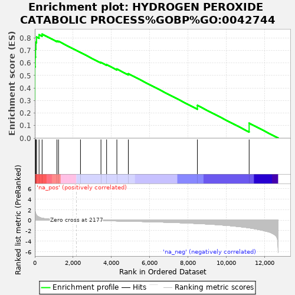

| | | Dataset | rankInfo |
| Phenotype | NoPhenotypeAvailable |
| Upregulated in class | na_pos |
| GeneSet | HYDROGEN PEROXIDE CATABOLIC PROCESS%GOBP%GO:0042744 |
| Enrichment Score (ES) | 0.8304519 |
| Normalized Enrichment Score (NES) | 3.1278875 |
| Nominal p-value | 0.0 |
| FDR q-value | 0.0 |
| FWER p-Value | 0.0 |
Table: GSEA Results Summary

Fig 1: Enrichment plot: HYDROGEN PEROXIDE CATABOLIC PROCESS%GOBP%GO:0042744
Profile of the Running ES Score & Positions of GeneSet Members on the Rank Ordered List
| SYMBOL | RANK IN GENE LIST | RANK METRIC SCORE | RUNNING ES | CORE ENRICHMENT | | 1 | HBZ | 0 | 6.373 | 0.3072 | Yes |
| 2 | HBM | 1 | 5.439 | 0.5694 | Yes |
| 3 | PRDX5 | 20 | 1.640 | 0.6470 | Yes |
| 4 | GPX1 | 39 | 1.346 | 0.7105 | Yes |
| 5 | HBA2 | 59 | 1.156 | 0.7648 | Yes |
| 6 | HBB | 91 | 0.931 | 0.8072 | Yes |
| 7 | HBQ1 | 222 | 0.587 | 0.8252 | Yes |
| 8 | PRDX1 | 381 | 0.366 | 0.8305 | Yes |
| 9 | PRDX2 | 1157 | 0.112 | 0.7748 | No |
| 10 | PRDX3 | 1240 | 0.098 | 0.7731 | No |
| 11 | MPO | 2387 | -0.014 | 0.6836 | No |
| 12 | HBD | 3458 | -0.092 | 0.6038 | No |
| 13 | CAT | 3753 | -0.115 | 0.5862 | No |
| 14 | GPX3 | 4289 | -0.157 | 0.5517 | No |
| 15 | HBG1 | 4889 | -0.203 | 0.5143 | No |
| 16 | HBG2 | 8498 | -0.640 | 0.2611 | No |
| 17 | PXDNL | 11204 | -1.474 | 0.1192 | No |
Table: GSEA details [plain text format]
Fig 2: HYDROGEN PEROXIDE CATABOLIC PROCESS%GOBP%GO:0042744: Random ES distribution
Gene set null distribution of ES for HYDROGEN PEROXIDE CATABOLIC PROCESS%GOBP%GO:0042744